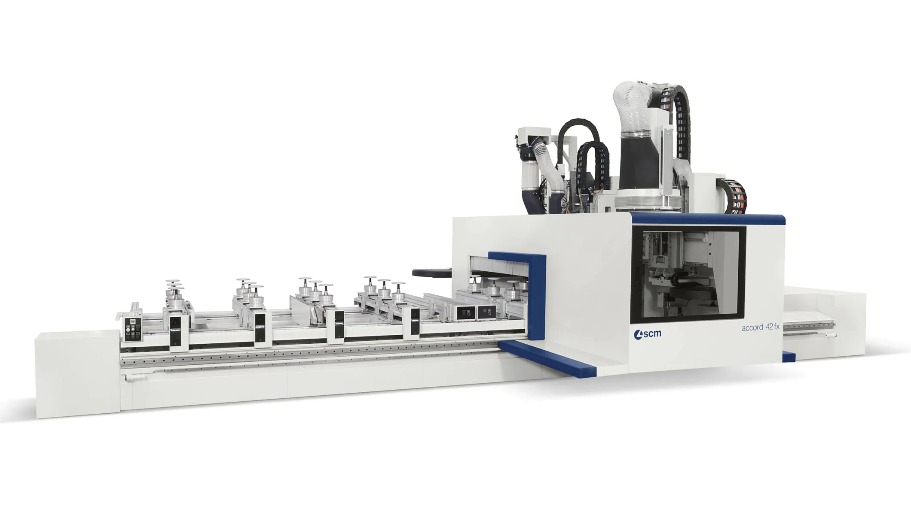

Engineering robust software in the Internet of Industrial Things
Martina Baiardi
m.baiardi@unibo.it
Context
- Introduction of Cyber-Physical Systems (CPSs) in manufacturing production process Cyber-Physical Production Systems (CPPSs)
- Additional challenges in software systems:
- Increased software complexity
- Increasing heterogeneity of devices
- Data distribution in the Edge-Cloud Continuum
- Robustness to faults (Self-Healing-Fault-Tolerant techniques)
- Predictive maintenance
- Role of AI and ML in optimizing manufacturing processes
Industrial case study
-
Active collaboration with SCM Group, a world leader in producing large woodworking machines.
-
Managing hybrid
LinuxandWindowscomputing environments -
Software maintenance is a challenge due to manual configurations and third-party dependencies
-
They need their software system capable to:
- autonomously update their software systems when newer updates are released
- finely control the operating system version
- automatic porting of configuration files between OS/software versions
- autonomously act in case of failures during this procedure
- avoid manual intervention for this process
- allow software to run on outdated hardware (manufacturing machines have longer lifecycle than software)


Challenges in this case study
-
Deployment: Managing long-lived industrial hardware while keeping software updated. Development process is supported by modern techniques (DevOps), but no general tool for deployment. The deployment process may fails, thus a rollback procedure that bring the machine back to the latest working version is required.
-
Heterogeneity: Handling diverse hardware and software environments across different factories. Manufacturing software systems must run for a long time, increasing risk that deployment may fail.
-
Dependencies: Ensuring compatibility between
- software versions
- software and operating system
- software and dependencies (can be ranges of compatibilities)
-
Critical Environment: Minimizing downtime and maximize reliability in production environments
- dependability concerns (availability, reliability, maintainability, safety)
- security
Goal
Developing autonomous, self-updating, and fault-tolerant manufacturing software systems
Approach
We approach the problem from two complementary directions:
-
Top-down: Enhancing state-of-the-art Self-Adaptive Self-Organizing (SASO) systems for adoption in industrial software
-
Bottom-up: Developing SASO systems to face practical problem in manufacturing
Results: TOP-DOWN
-
We compared SASO systems architectures, and we acknowledged that other research field approaches were not really disconnected from the SASO vision. We identified that BDI (Beliefs-Desires-Intentions) Multi-Agent Systems (MASs), which literature never considered for SASO systems, were basically proposing the same model description with different aims. For this reason, we decided to investigate the feasibility of using BDI as a programming framework for SASO systems.
-
Towards this end, we acknowledged that current BDI frameworks were not suitable for industrial adoption, because of their steep learning curve and lack of ergonomics. Therefore, we developed JaKtA, a BDI framework in Kotlin, which proposes a more ergonomic and developer-friendly approach for BDI programming.
-
During the literature review of existing BDI frameworks, we identified that concurrency management was not treated with the required attention, and often hidden under the implementation of the frameworks. Concurrency is a crucial aspect when dealing with heterogeneous manufacturing systems particularly for the reliability requirement, therefore we classified concurrency models in BDI frameworks and highlighted the importance of controlling it.
-
We identified that testing and validation of BDI systems before deployment was not sufficiently investigated in the literature. We proposed simulation-based validation for BDI MASs, enabling early detection of deployment issues.
Collaborations
The top-down research gathered interest from the international community, leading to collaborations with other research groups.
Collaboration with Ohio State University (USA)
We propose a decentralized multi-drone coordination approach for wildlife video acquisition, leveraging distributed algorithms to enable autonomous drones to collaboratively plan and execute video capture missions in dynamic environments.

Collaboration with Mälardalen University (Sweden)
We propose a field-based runtime replanning approach for multi-robot systems in unpredictable environments, leveraging aggregate programming to enable decentralized, adaptive decision-making even under unreliable network conditions.

Collaboration with Kiel University (Germany)
We propose a self-adaptive communication strategy for maritime vessels using collective adaptive relay schemes, enhancing connectivity and data exchange in dynamic maritime environments.

RESULTS: BOTTOM-UP
- Defined requirements and architecture for an autonomous update system for industrial machines.
- Designed and prototyped a rollback and downgrade mechanism to ensure system reliability during updates.
- Integrated containerization and virtualization to manage software dependencies and OS versions.
- Filed an Italian national patent for the update method for dependent software in machines.
Publications overview
12 publications
- 3 Short papers
- 3 Main Track conference papers
- 3 Workshop papers
- 1 Tool paper
- 1 Journal paper
- 1 Book chapter
6 accepted papers (not yet published)
- 3 Main Track conference papers
- 2 Workshop papers
- 1 Short conference paper
1 Journal paper under review
1 Journal papers currently in progress
Publications details
Published Workshop:
- Baiardi M., et. al. (2023). Infrastructures for the Edge-Cloud Continuum on a Small Scale: A Practical Case Study. In: SISSY 2023, in conjunction with ACSOS 2023.
- Pianini D., et. al. (2024). Multi-Paradigm Integration for the BDI Resurgence. In: SISSY 2024, in conjunction with ACSOS 2024.
- Baiardi M., et. al. (2024). On the External Concurrency of Current BDI Frameworks for MAS. In: EMAS 2024, in conjunction with AAMAS 2024.
Published Doctoral Symposium:
- Baiardi M. (2024). Supporting Autonomic Computing via BDI Tooling. In: ACSOS 2024.
- Baiardi, M. (2023). A Step Forward to Widespread BDI AOP: JaKtA. In: EUMAS 2023.
- Baiardi, M. (2024). Validation of BDI MASs via Simulation. In: DS-RT 2024.
Published Main Conference:
- Baiardi M., et. al. (2023). JaKtA: BDI Agent-Oriented Programming in Pure Kotlin. In: EUMAS 2023.
- Grushchak D., et al. (2024). Decentralized Multi-Drone Coordination for Wildlife Video Acquisition. In: ACSOS 2024.
- Baiardi M., et. al. (2024). Concurrency Model of BDI Programming Frameworks: Why Should We Control It? In: AAMAS 2024.
Published Journal:
- Baiardi, M., et al. (2024). Blending BDI Agents with Object-Oriented and Functional Programming with JaKtA. IN: SN Computer Science.
Published Book chapter:
- Baiardi M., et. al. (2025). JaKtA: Better Tools for a Mainstream BDI. In: Agent Toolkits: Yesterday, Today and Tomorrow.
Published Tool papers:
- Aguzzi G., et. al. (2025). A Demonstrator Toolchain for Self-organizing Robot Teams. In: Coordination 2025.
Accepted Workshop:
- Burattini S., Baiardi M., et al. (2025). The Gap Between BDI Agents and Semantic Hypermedia and What We Can Do About It. In: HyperAgents 2025 Workshop, in conjunction with ECAI 2025.
- Al-Falouji G., Baiardi M., et. al. (2025). CoMPass: A Roadmap to Collaborative perception and Autonomy in Maritime Systems. In: SISSY 2025 Workshop, in conjunction with ACSOS 2025.
Accepted Main Conference:
- Aguzzi G., Baiardi M., et. al. (2025). A Field-based Approach for Runtime Replanning in Swarm Robotics Missions. In: ACSOS 2025.
- Baiardi M., et. al. (2025). Robust Communication through Collective Adaptive Relay Schemes for Maritime Vessels. In: ACSOS 2025.
- Ciatto G., et. al. (2025). Exploiting GenAI for Plan Generation in BDI Agents. In: ECAI 2025.
Accepted Doctoral Symposium:
- Baiardi M. (2025). Cognitive Agents in the Field: an Hybrid Approach Between Agent-Oriented and Aggregate Computation. In: ACSOS 2025.
Under review Journal:
- Baiardi M., et al. (2025). Using Discrete Event Simulation to Test BDI Systems Before Deployment. In: Auton. Agents Multi Agent Syst.
In progress Journal:
- Baiardi M., et. al. (2025). Self-healing long-term maintenance of large-scale manufacturing machines.